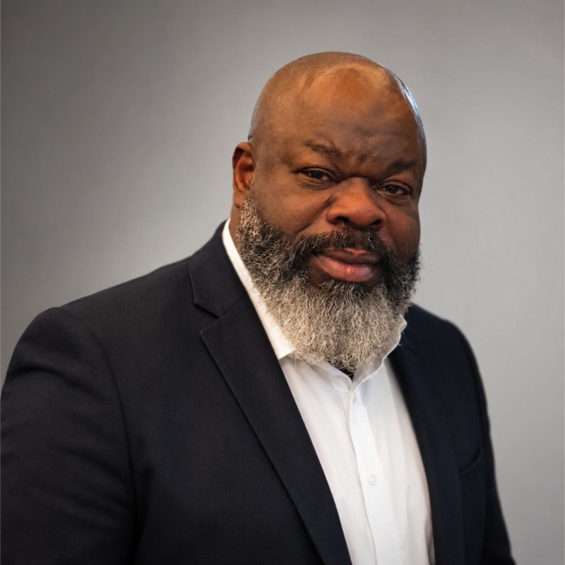

Un ingénieur béninois, vingt-cinq ans de métier, une décision : bâtir au Bénin.
AFB‑Dev est portée par Georges GANGBES, ingénieur en génie industriel et électrotechnique, formé à la gestion d'entreprise (DESS), décidé à mettre son expérience au service du développement de son pays d'origine.
De conception, de réalisation et de mise en œuvre d'infrastructures électriques et de projets de bâtiment, en France et à l'international.

Un parcours d'ingénieur de terrain
Le parcours s'est construit autour du génie électrique, de la maintenance industrielle, de l'automatisme et de l'informatique industrielle. Il s'est prolongé, côté conduite d'affaires, par une formation en gestion d'entreprise de niveau DESS. Cette double culture (technique et gestion) se retrouve dans la manière dont chaque projet est piloté : maîtrise des contraintes techniques, mais aussi des enjeux financiers et contractuels propres aux grands chantiers.
Pendant vingt-cinq ans, ce parcours a porté sur des opérations de conception, de réalisation et de mise en œuvre d'infrastructures électriques, ainsi que sur des projets de bâtiment livrés clés en main. Parmi les responsabilités exercées :
- Direction de lots techniques (courants forts, courants faibles, sûreté) sur des ouvrages complexes, avec conduite jusqu'à la mise en service et la levée des réserves.
- Supervision d'une centrale thermique à cycle combiné de forte puissance et de postes de conversion d'énergie.
- Restructuration et extension de réseaux de distribution électrique, dont des opérations en Afrique de l'Ouest.
- Direction d'agence et de contrats industriels et tertiaires : prospection, développement, exécution, suivi administratif et contractuel.
Un attachement personnel, pas un projet de circonstance
L'attachement de Georges GANGBES au Bénin n'est pas circonstanciel : toute sa famille est née sur cette terre. C'est cet attachement, conjugué à vingt-cinq ans d'expérience de terrain, qui fonde AFB‑Dev et son intention explicite : transmettre. Construire des ouvrages, oui, mais surtout laisser derrière soi des équipes capables de les faire vivre.
Formation
- Ingénieur en génie industriel · CNAM.
- Master en électrotechnique et automatisme · CNAM.
- DESS en administration des entreprises · IAE Toulon.
- DUT génie électrique, informatique industrielle et maintenance · Université de Toulon.
Revenir non pas pour observer, mais pour bâtir, et pour transmettre.Georges GANGBES, fondateur d'AFB‑Dev
Échanger sur un projet, un partenariat, une mission ?
La porte est ouverte à un premier dialogue, sans engagement.